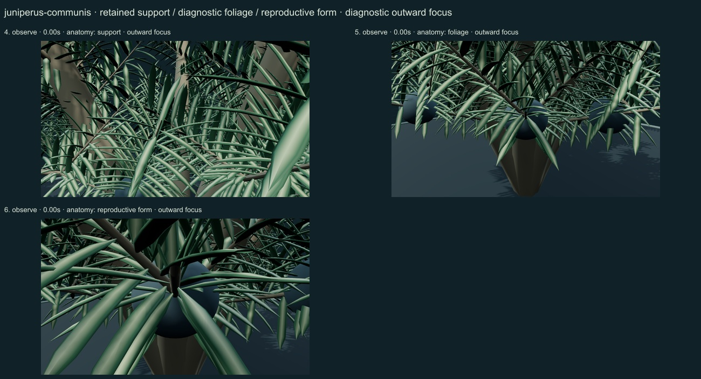
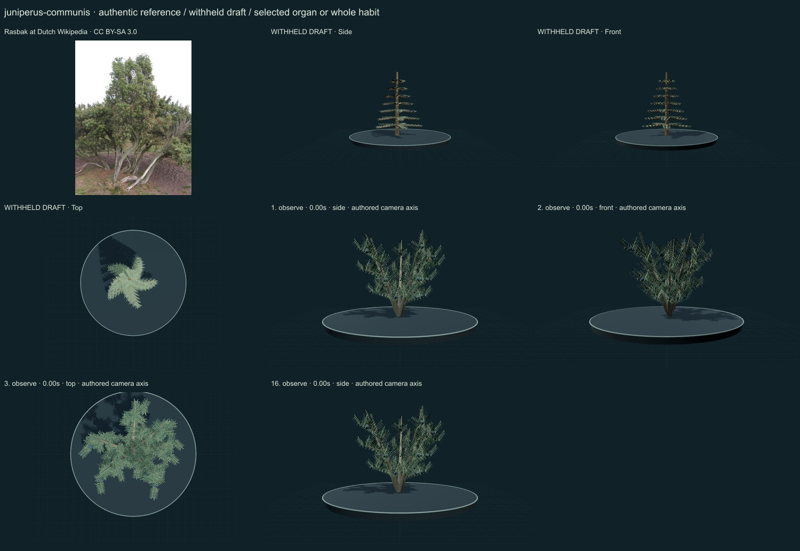
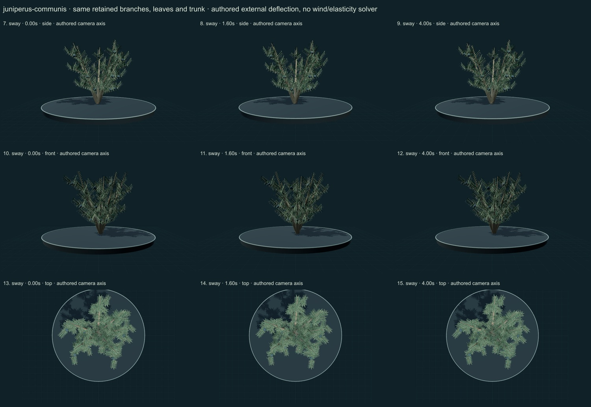

PhenoVoxel Archive · v0.6.24 · October 25, 2026
Common juniper
285 records after verified publication. 15 saved drafts remain held; 265 remain to 550, including 250 without a saved draft. Release register.
Selected actual university species diagnosis through search retrieval: variable shrubby/tree habit, awl leaves in whorls of three with one broad pale upper band, globose wax-bloomed blue/black fleshy seed cones. No ordinary flower/fruit interpretation.
Rasbak at Dutch Wikipedia · CC BY-SA 3.0. Source-labelled real organism reference; preparation, life-stage, location and selected phenotype do not establish all species variation or measured 3D anatomy. Resized inside 1000 px, flattened and JPEG encoded; no generative alteration.
Exact creator, license, source/download/local checksums and access scopes remain in the data. Additional copyrighted institutional photographs and primary figures were consulted privately and linked, not redistributed or sampled into materials.
A selected multistemmed juniper has irregular strip-bark stems, stiff spreading awl leaves in alternating whorls of three with one pale upper-band cue, and small fused fleshy blue-grey seed cones with a muted wax-bloom appearance.
Original numerical connected woody/green axes, individual curved leaf surfaces, subdued pigment variation and selected reproductive surfaces. No source photograph pixels or measured tissue optical parameters.
Remaining: The crown remains open and regularly repeated compared with the retained old shrub photograph. Fine band placement, wax bloom, tissue optics and proportions are unmeasured. Prostrate and tree habits, regional/subspecific concepts, cone maturation and seedling development are not represented as universal variation.
Same retained woody axes, rachises, leaves and reproductive surfaces during small authored external deflection. Root/support position and scale remain anchored. Timing and angles are qualitative; there is no wind/elasticity solver, physiological simulation or measured biomechanics. Complete germination, organ emergence and seed-to-adult development are unavailable; no resizing of a ready mature plant.
Partly stylized original educational reconstructions. Fine morphology, age variation, tissue optics, dimensions and environmental mechanics remain incomplete or unmeasured. No independent specialist validation, scientific certification or accuracy percentage. Software checks and screenshots do not establish biological validity.
16 actual nonblank final viewer states inspected on 3 labelled sheets. Side/front/top are authored whole-habit or selected-organ camera axes; outward focus is a separate diagnostic view. Qualitative author review, not independent scientific certification.



Partly stylized original educational reconstructions. Fine morphology, age variation, tissue optics, dimensions and environmental mechanics remain incomplete or unmeasured. No independent specialist validation, scientific certification or accuracy percentage. Software checks and screenshots do not establish biological validity. Prior 274 species objects and original wolf/tiger meshes unchanged. Occurrences and cultivated accessions are not native-range boundaries. Legacy Protista/Monera are reporting conveniences.
Exact findings, sources and screenshot hashes